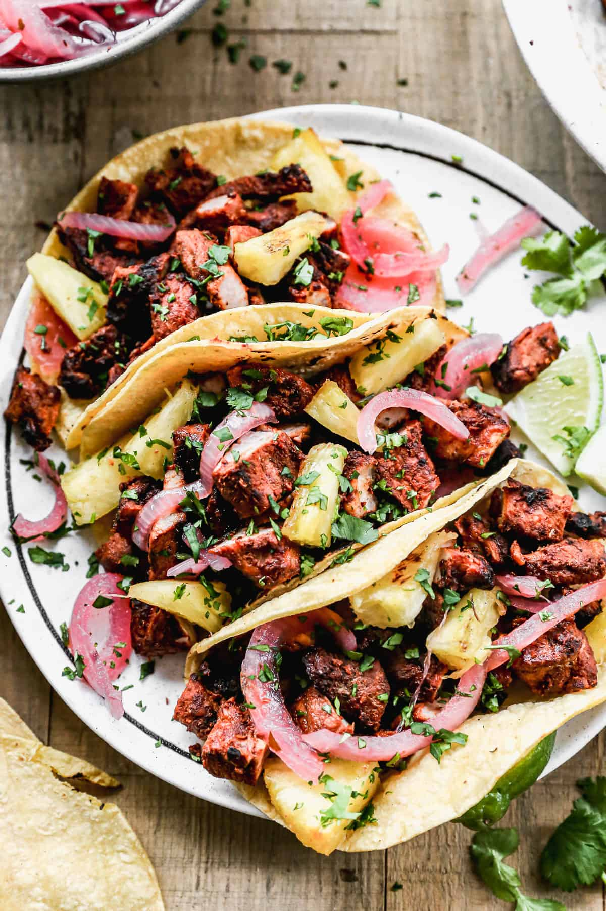

Tacos al Pastor Recipe

Description
Tacos al Pastor are a classic Mexican street food made with marinated pork, cooked until tender and slightly charred, then served in warm corn tortillas. Sweet pineapple, fresh cilantro, and diced onion add a perfect balance of flavors.
Inspired by Lebanese shawarma, this dish blends smoky, spicy, and sweet elements for a bold, vibrant bite. A squeeze of lime brings it all together.
Ingredients
- 2–3 dried guajillo chiles, stemmed and seeded
- 2–3 dried ancho chiles, stemmed and seeded
- 1/4 cup white vinegar
- 1/4 cup orange juice (fresh is best)
- 2 tablespoons achiote paste
- 1 tablespoon chipotle in adobo (optional, for extra heat)
- 1 teaspoon dried oregano (preferably Mexican oregano)
- 1 teaspoon ground cumin
- 1/2 teaspoon ground cinnamon
- 1 tablespoon brown sugar
- Salt to taste (about 1–1.5 tsp)
- 2–2.5 lbs pork shoulder or pork butt, thinly sliced (1/4" thick)
- 1/2 pineapple, peeled and sliced
- 1 small white onion, chopped
- Fresh cilantro, chopped
- Corn tortillas
- Lime wedges, for serving
Steps
- Prepare the Marinade
- Marinate the Pork
- Cook the Meat
- Assemble Tacos
Home